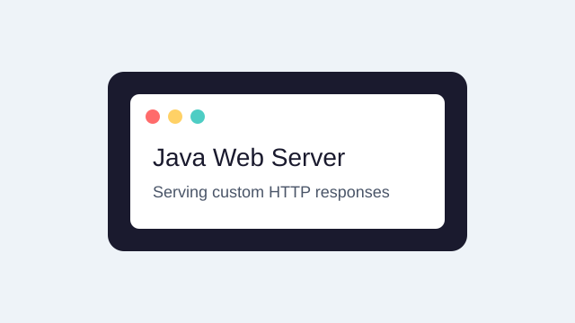

Welcome
This page is being served by a custom multithreaded HTTP web server written in Java for CMPS 242 — Computer Networks at AUB.
The server handles each browser request in its own thread, supports multiple file types, and returns proper HTTP/1.0 responses.

- Multithreaded request handling
- HTTP/1.0 GET support
- MIME type detection
- 400, 404, and 500 error pages